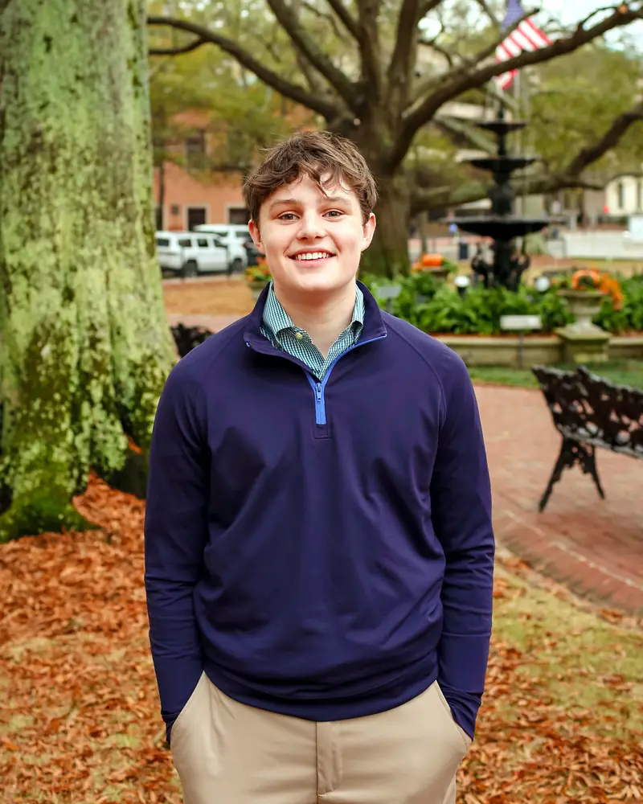
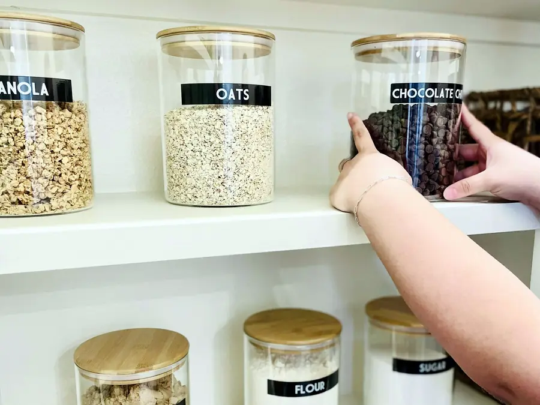

Less microplastic. Same budget.
Avoiding microplastics is hard
Plastic shows up in the clothes, kitchens and cleaning products people use every day.
Plastic is in almost everything
Over the last few decades, cheaper synthetic materials replaced natural ones. In 2023, polyester alone made up 57% of all the fiber produced in the world.
Good swaps are hard to find
People who want to cut back can't find alternatives to the products they use every day, or the ones they find cost too much.
No one should have to choose between their health and saving money
Safer products should fit an ordinary family budget.
Source: Textile Exchange, Materials Market Report 2024.

My family started swapping in 2024
I'm John Griffin, a junior at Episcopal Collegiate School in Little Rock. A couple of years ago, I didn't know much about microplastics either. Too many people still don't. That changed in 2024, when I started watching health experts and doctors explain the research.
My dad did his own research and talked with doctors he knows, and they confirmed what I had learned. So we started swapping. Between August 2024 and September 2025, we replaced our plastic cutting board, spatula, food containers, dishwasher pods, toothbrushes and even underwear.
Cut the plastic in your home in three steps
Start with the swaps my family has already made.
-
Download the free swap list
Six swaps, room by room, with what each one replaces and what we paid.
-
Make the swaps that fit your budget
Start with the cheap ones. A bamboo cutting board cost us about $15.
-
Tell me what worked
Let me know which swaps were easiest for your family, so the list keeps improving.
If you replace the products on this list, you'll be exposed to fewer microplastics day to day.
Six swaps my family made
From the kitchen to the closet.
A home with less plastic in it
You'll know what to replace first, and each swap is easy to make on a normal budget. Swap by swap, the plastic your family lives with every day shrinks.

Doctors are finding plastic in human arteries
Researchers are still learning what microplastics do inside the body. Two recent studies point the same direction.
Plastic in artery plaque
In a 2024 study of 257 patients, people with microplastics in the plaque of their neck arteries were about four and a half times as likely to have a heart attack or stroke, or to die, within about three years. The study found a link and could not prove that plastic caused it.
More plastic in the brain
A 2025 study found about 50% more microplastic in human brain samples from 2024 than in samples from 2016.
Sources: Marfella et al., New England Journal of Medicine, 2024; Nihart et al., Nature Medicine, 2025.
Sources
- Textile Exchange. Materials Market Report 2024. Polyester was 57% of global fiber production in 2023.
- Marfella, Raffaele, et al. Microplastics and Nanoplastics in Atheromas and Cardiovascular Events. New England Journal of Medicine 390, no. 10 (2024).
- Nihart, Alexander J., et al. Bioaccumulation of Microplastics in Decedent Human Brains. Nature Medicine (2025).